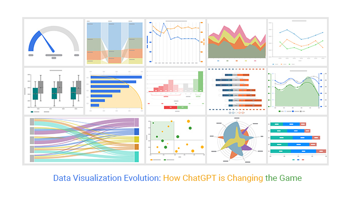

Project Overview
This project aims to optimize the supply chain for a retail company. By analyzing sales patterns, order volumes, and customer segments, the goal is to improve inventory management, reduce costs, and enhance overall supply chain efficiency.
Technical Implementation
The analysis is presented through a data visualization dashboard, built using a business intelligence tool; Tableau.The dashboard incorporates various chart types:
- KPI metrics for total orders, profit, sales, quantity, and discount rate
- Line chart for monthly order trends
- Bar chart for sales by department
- Pie charts for top categories by quantity and customer segments
- Tables for top/bottom customers by profit and top cities

Challenges
These are the challenges encountered during the analysis
- Aligning inventory levels with fluctuating demand across different product categories
- Managing supply chain for diverse customer segments (Home Office, Consumer, Corporate)
- Optimizing distribution to top cities while maintaining service to all locations
- Adapting supply chain to seasonal variations in order volume
Solution
The implemented dashboard addresses these challenges by:
- Use monthly order trends to forecast demand and adjust inventory levels
- Analyze sales by department to optimize supplier relationships and stock allocation
- Leverage top category data to prioritize inventory and streamline logistics for high-volume products
- Use customer segment information to tailor supply chain strategies for different markets
- Optimize distribution networks based on sales volumes in top cities

Projected Results & Impacts
Impacts Expected
- Improved inventory turnover rates by aligning stock levels with demand patterns
- Reduced logistics costs through optimized distribution to key cities and customer segments
- Enhanced supplier relationships focused on top-selling departments and categories
- Improved customer satisfaction through better product availability and reduced stockouts
- Increased profitability by minimizing holding costs and optimizing discount rates
Lessons Learned
Key Takeaways
- The importance of integrating sales and customer data into supply chain decision-making
- The value of segmenting supply chain strategies based on customer types and geographic locations
- The need for flexible supply chain processes to handle seasonal variations in order volume
- The potential for using top customer data to develop specialized supply chain solutions for key accounts
Summary
This analysis provides a foundation for data-driven supply chain optimization. Future iterations could incorporate more direct supply chain metrics such as lead times, inventory levels, and logistics costs to provide a more comprehensive view of supply chain performance.